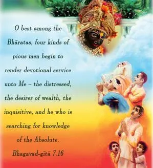
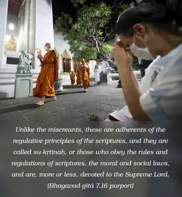
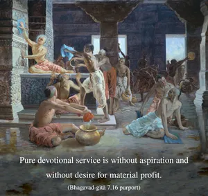
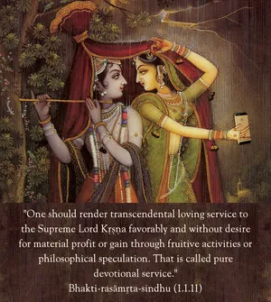

O best among the Bhāratas, four kinds of pious men begin to render devotional service unto Me – the distressed, the desirer of wealth, the inquisitive, and he who is searching for knowledge of the Absolute.




Unlike the miscreants, these are adherents of the regulative principles of the scriptures, and they are called su-kṛtinaḥ, or those who obey the rules and regulations of scriptures, the moral and social laws, and are, more or less, devoted to the Supreme Lord. Out of these there are four classes of men – those who are sometimes distressed, those who are in need of money, those who are sometimes inquisitive, and those who are sometimes searching after knowledge of the Absolute Truth. These persons come to the Supreme Lord for devotional service under different conditions. These are not pure devotees, because they have some aspiration to fulfill in exchange for devotional service. Pure devotional service is without aspiration and without desire for material profit. The Bhakti-rasāmṛta-sindhu (1.1.11) defines pure devotion thus:
anyābhilāṣitā-śūnyaṁ
jñāna-karmādy-anāvṛtam
ānukūlyena kṛṣṇānu-
śīlanaṁ bhaktir uttamā
“One should render transcendental loving service to the Supreme Lord Kṛṣṇa favorably and without desire for material profit or gain through fruitive activities or philosophical speculation. That is called pure devotional service.”
When these four kinds of persons come to the Supreme Lord for devotional service and are completely purified by the association of a pure devotee, they also become pure devotees. As far as the miscreants are concerned, for them devotional service is very difficult because their lives are selfish, irregular and without spiritual goals. But even some of them, by chance, when they come in contact with a pure devotee, also become pure devotees.
Those who are always busy with fruitive activities come to the Lord in material distress and at that time associate with pure devotees and become, in their distress, devotees of the Lord. Those who are simply frustrated also come sometimes to associate with the pure devotees and become inquisitive to know about God. Similarly, when the dry philosophers are frustrated in every field of knowledge, they sometimes want to learn of God, and they come to the Supreme Lord to render devotional service and thus transcend knowledge of the impersonal Brahman and the localized Paramātmā and come to the personal conception of Godhead by the grace of the Supreme Lord or His pure devotee. On the whole, when the distressed, the inquisitive, the seekers of knowledge, and those who are in need of money are free from all material desires, and when they fully understand that material remuneration has nothing to do with spiritual improvement, they become pure devotees. As long as such a purified stage is not attained, devotees in transcendental service to the Lord are tainted with fruitive activities, the search for mundane knowledge, etc. So one has to transcend all this before one can come to the stage of pure devotional service.